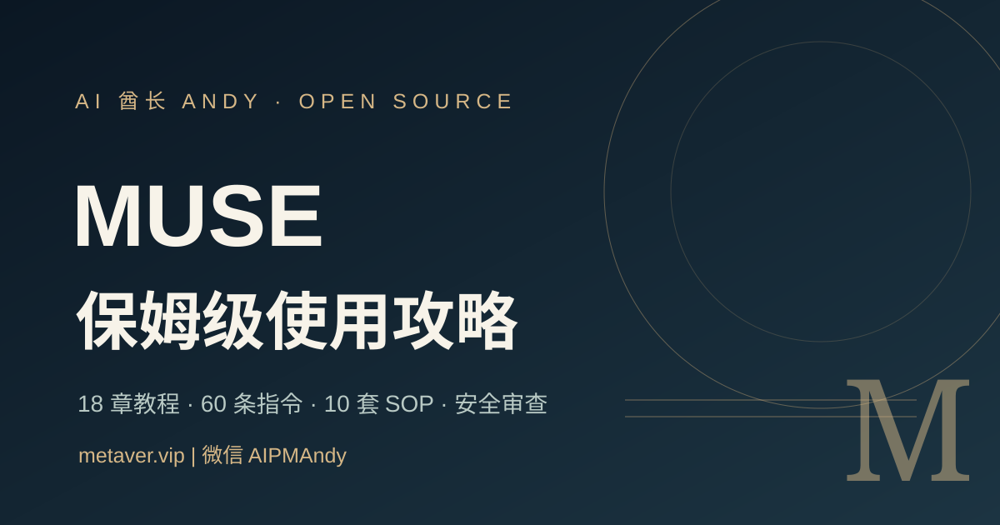

Meta Muse Atlas 中文開源手冊｜28 章、任務模板與安全邊界的查核

一句話摘要
這是一份把「怎麼交辦 agent」拆成任務規格、權限、證據、驗收與復盤的繁中／中文資源；它有實際可檢視的 repo 和安全文件，值得當作**方法論參考**，但不能因為教材完整就推定 Meta Muse 已在所有地區、帳戶與平台可用。
這次可公開核對到什麼？
截至 2026-10-22，GitHub repo [`AIPMAndy/muse-guide`](https://github.com/AIPMAndy/muse-guide) 為公開專案，`main` 最新可見 commit 為 `23fc37f`，README 標記 `v3.0.0`、內容核查日為 2026-10-21，並採 [MIT License](https://github.com/AIPMAndy/muse-guide/blob/main/LICENSE)。網站在 [GitHub Pages](https://aipmandy.github.io/muse-guide/) 提供互動式閱讀。
README 自述的組成包括：
| 模組 | 專案自述 | 實用判斷 |
|---|---:|---|
| 實戰章節 | 28 章 | 由入門、任務書、連接器到安全、評估、營運維護；可按自己的問題選讀。 |
| 場景指令 | 80 條 | 只應視為任務草稿，替換真實資料前先縮小權限與資料範圍。 |
| 業務 SOP | 12 套 | 價值在於把輸入、執行鏈、審批與驗收寫清楚，不在於讓 agent 代替決策。 |
| 30 天計畫 | 30 項 | 適合建立低風險測試與復盤節奏；不必機械照表完成。 |
| 安全檢查、FAQ | 各 12 項 | 可作授權、提示注入、分享、寫入、回滾與誤操作的檢核起點。 |
| 模板 | 8 套 | 包含任務書、權限矩陣、證據台帳、內容、求職、客戶交付、應急與 ROI。 |
專案目錄中可見 `guides/`、`templates/`、`docs/`、`tests/` 和 `data/`；README 也連到來源清單、官方能力證據矩陣、測試協定、對抗式審核與路線圖。這些是「可追溯」的好起點，不是對每一條內容正確或每個功能可用的保證。
它做對的四個界線
- **不冒充官方**：README 直接寫明是獨立編輯專案，非 Meta 官方。
- **不教資格繞行**：專案明言不提供非官方繞過地區限制或授權限制的方法。
- **區分公開能力與實際帳戶**：不同地區、設備、帳戶與版本可能不同，需以真實帳戶驗證。
- **把安全寫進流程**：從首次只讀任務、最小權限到安全與隱私檢查，而非只提供提示詞清單。
這也和 Meta 官方對 Muse 的定位一致：它是可在 Secure VM 與瀏覽器中代為處理長時間任務的 agent；連接器和敏感動作的控制，比「提示詞寫得多漂亮」更重要。可參考 [Meta 官方公告](https://about.fb.com/news/2026/09/introducing-muse-personal-ai-agent/)；地區與帳戶資格則仍以 [Muse 官方入口](https://muse.ai/) 當下資訊為準。
使用時不要略過的檢查
- **先讀來源與版本日期**：功能、價格、地區與 connector 是高變動資訊；優先看專案標示的證據連結與官方更新日。
- **只以低敏感任務開始**：例如彙整公開文章、建立閱讀清單或起草非外發文件；先不連 Email、行事曆、雲端硬碟、付款或社群帳號。
- **任務要可驗收**：寫明資料範圍、允許的行動、禁止行動、引用格式、完成條件與需要人工核准的節點。
- **測試輸出，不只看「已完成」**：抽查 URL、數字、引用與實際外部狀態；agent 的完成通知不是證據。
- **別把秘密貼到公開處**：專案本身亦提醒，不要在公開 GitHub Issue、任務生成器或尚未評估的 agent 中輸入密碼、token、驗證碼或客戶個資。
關於網站隱私與開源授權
README 表示其任務書生成器和進度功能在瀏覽器本地運作、沒有後端、不採集輸入。這是專案的自述；本次未做完整前端程式碼安全稽核，因此有敏感資料的任務仍不應依此單一說明放心輸入。
MIT 授權涵蓋專案的原創編輯內容；它**不會**把 Meta、Muse 的名稱、商標或服務權利一併授權，也不保證可以複製其帳號能力或繞過服務限制。
建議的最小採用方式
先挑一份「Agent 任務書」或「來源證據台帳」模板，套用到一個公開資料的小型研究題目。確認來源引用、結果格式與人工審核流程能運作後，再評估是否接入任何個人資料或真實帳戶。把它當成能持續更新的操作手冊，而不是一鍵開通 Muse 的攻略。